Một khớp là điểm nối hay điểm xoay giữa hai hoặc nhiều xương. Vận động của toàn bộ cơ thể xảy ra chủ yếu thông qua sự xoay của các xương quanh từng khớp riêng lẻ. Khớp còn có nhiệm vụ truyền và phân tán các lực do trọng lực cũng như sự co cơ tạo ra.
Khớp học (arthrology) — môn học về phân loại, cấu trúc và chức năng của khớp — là nền tảng quan trọng cho toàn bộ lĩnh vực kinesiology. Tuổi tác, tình trạng bất động kéo dài, chấn thương và bệnh tật đều ảnh hưởng đến cấu trúc và cuối cùng là chức năng của khớp. Những yếu tố này cũng tác động đáng kể đến chất lượng cũng như lượng của vận động con người.
Chương này tập trung vào cấu trúc và chức năng giải phẫu chung của khớp. Các chương thuộc Phần II đến Phần IV của cuốn sách sẽ mô tả giải phẫu chi tiết và chức năng cụ thể của từng khớp trong toàn bộ cơ thể. Thông tin chi tiết này là điều kiện tiên quyết để hiểu được các rối loạn chức năng của khớp, cũng như để áp dụng các biện pháp phục hồi chức năng hiệu quả nhất cho người bệnh có rối loạn khớp.
Một cách phân loại khớp tập trung chủ yếu vào tiềm năng vận động của chúng. Dựa trên tiêu chí này, cơ thể tồn tại hai loại khớp chính: khớp không di động (synarthroses) và khớp di động (diarthroses) (Hình 2.1).
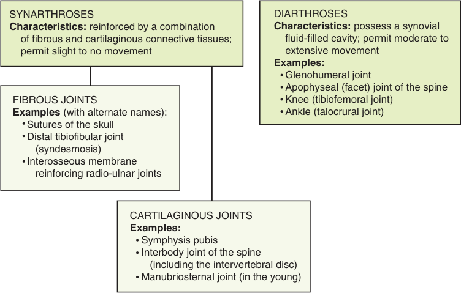
Khớp sợi được cố định bởi các mô liên kết đặc biệt, thường có nồng độ collagen cao. Ví dụ về khớp sợi bao gồm các khớp khâu của sọ (sutures of the skull), khớp chày mác xa (distal tibiofibular joint, thường được gọi là syndesmosis), và các khớp khác được gia cố bằng màng liên cốt (interosseous membrane) — chẳng hạn màng củng cố các khớp quay-trụ.
Ngược lại, khớp sụn được cố định bởi các dạng sụn xơ (fibrocartilage) hoặc sụn trong suốt (hyaline cartilage) linh hoạt, thường pha trộn với collagen. Khớp sụn nói chung nằm ở đường giữa của cơ thể, chẳng hạn như khớp mu (symphysis pubis), khớp liên thân đốt sống (interbody joints of the spine, bao gồm cả đĩa đệm đốt sống), và khớp ức — mỏm ngực (manubriosternal joint).
Chức năng của các khớp synarthrodial là gắn kết chặt chẽ và truyền lực giữa các xương. Những khớp này thường được các mô liên kết quanh khớp hỗ trợ vững chắc và nhìn chung cho phép rất ít vận động.
Khớp di động là một khớp cho phép vận động từ trung bình đến rộng rãi. Các khớp này còn sở hữu một khoang chứa đầy dịch hoạt dịch (synovial fluid). Bởi đặc điểm này, các khớp diarthrodial thường được gọi là khớp hoạt dịch (synovial joints). Khớp hoạt dịch chiếm phần lớn các khớp trong hệ cơ-xương.
Các khớp diarthrodial (hoạt dịch) được chuyên biệt hóa cho vận động và luôn thể hiện bảy thành phần (Hình 2.2):
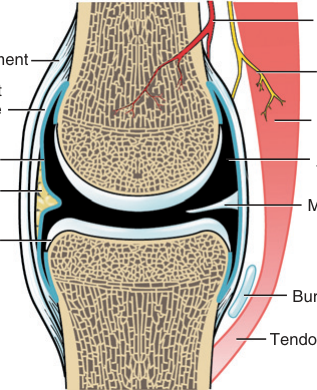
Các dây chằng có độ dày khác nhau tùy theo đòi hỏi chức năng đặt lên khớp. Hầu hết dây chằng có thể được mô tả là bao khớp (capsular) hoặc ngoài bao khớp (extracapsular). Dây chằng bao khớp thường là phần dày lên của bao khớp, chẳng hạn các dây chằng quạ - cánh tay (glenohumeral ligaments) và phần sâu của dây chằng chậu mác bên (medial collateral ligament) của gối. Dây chằng bao khớp thường gồm một lá rộng các sợi, khi căng ra sẽ kháng lại vận động theo hai, thường là ba mặt phẳng. Hầu hết dây chằng ngoài bao khớp có dạng sợi dây hơn, và có thể tách biệt một phần hoặc hoàn toàn khỏi bao khớp — ví dụ dây chằng chậu mác bên (lateral collateral ligament) của gối hay dây chằng alar vùng sọ-cổ. Những dây chằng rời rạc hơn này thường định hướng theo một cách cụ thể để kháng lại tối ưu vận động thường chỉ trong một hoặc hai mặt phẳng.
Để thích nghi với phổ rộng các hình dạng và đòi hỏi chức năng của khớp, các thành phần khác đôi khi cũng xuất hiện trong khớp hoạt dịch (xem Hình 2.2). Đĩa trong khớp (intra-articular discs) hay sụn chêm (menisci) là những miếng đệm sụn xơ nằm giữa các bề mặt khớp. Các cấu trúc này tăng độ tương hợp khớp (articular congruency) và cải thiện sự phân tán lực. Đĩa trong khớp và sụn chêm có mặt ở một số khớp của cơ thể (xem hộp).
Một viền sụn ngoại vi (peripheral labrum) bằng sụn xơ kéo dài từ vành xương của hõm ổ chảo (glenoid fossa) của vai và ổ cối (acetabulum) của hông. Các cấu trúc chuyên biệt này làm sâu thêm thành viên lõm của khớp và hỗ trợ, làm dày thêm sự bám của bao khớp. Đệm mỡ (fat pads) có thể củng cố mặt trong của bao khớp cũng như lấp đầy các khoảng trống không tiếp khớp (các hốc) do các đường cong xương không tương hợp tạo ra; nhờ vậy chúng giảm bớt thể tích dịch hoạt dịch cần thiết cho chức năng khớp. Đệm mỡ thay đổi kích thước và nằm trong lớp chất của bao khớp, thường xen giữa lớp xơ và màng hoạt dịch. Nếu các đệm mỡ phì đại hoặc viêm, chúng có thể làm thay đổi cơ học của khớp. Đệm mỡ nổi bật nhất ở khuỷu và gối.
Túi hoạt dịch (bursae) thường hình thành cạnh đệm mỡ. Túi hoạt dịch là sự mở rộng hay túi thừa của màng hoạt dịch của một khớp diarthrodial. Túi hoạt dịch chứa đầy dịch hoạt dịch và thường nằm ở những vùng có tiềm năng chịu stress. Giống như đệm mỡ, túi hoạt dịch giúp hấp thụ lực và bảo vệ các mô liên kết quanh khớp, bao gồm cả xương. Chẳng hạn, túi hoạt dịch dưới mỏm cùng (subacromial bursa) ở vai nằm giữa mặt dưới của mỏm cùng xương bả vai và chỏm xương cánh tay; túi này có thể viêm do bị chèn ép lặp đi lặp lại giữa xương cánh tay và mỏm cùng — tình trạng thường được gọi là viêm túi hoạt dịch dưới mỏm cùng (subacromial bursitis).
Nếp gấp hoạt dịch (synovial plicae, tức các nếp gấp, nếp thừa hay các tua hoạt dịch) là những nếp gấp mô chồng chéo, chùng nhẽo, gồm các lớp trong cùng của bao khớp. Chúng xuất hiện bình thường ở các khớp có diện tích bề mặt bao khớp lớn như gối và khuỷu. Plicae tăng diện tích bề mặt hoạt dịch và cho phép vận động khớp hoàn toàn mà không gây căng thẳng thái quá lên lớp lót hoạt dịch. Nếu các nếp này quá rộng hoặc dày lên, dính vào nhau do viêm, chúng có thể gây đau và làm thay đổi cơ học khớp. Các plicae của gối được mô tả kỹ hơn ở Chương 13.
Cho đến đây, các khớp đã được phân loại thành hai nhóm lớn chủ yếu dựa trên tiềm năng vận động. Bởi hiểu sâu về khớp hoạt dịch rất quan trọng đối với việc nắm vững cơ học của vận động, chúng được phân loại sâu hơn bằng một phép loại suy với những vật thể hay hình dạng cơ học quen thuộc (Bảng 2.1).
| Loại khớp | Chuyển động góc chính | Tính tương tự cơ học | Ví dụ giải phẫu |
|---|---|---|---|
| Khớp bản lề (Hinge) | Chỉ gập — duỗi | Bản lề cửa | Khớp humero-ulnar; khớp liên đốt ngón |
| Khớp trục quay (Pivot) | Xoay (spin) của một thành viên quanh một trục xoay duy nhất | Tay nắm cửa (doorknob) | Khớp humeroradial; khớp atlanto-axial |
| Khớp ellipsoid | Vận động lưỡng diện (gập-duỗi và dạng-kép) | Mặt lồi hình trứng ghép với rãnh lõm | Khớp quay-cổ tay (radiocarpal) |
| Khớp hình cầu (Ball-and-socket) | Vận động tam diện (gập-duỗi, dạng-kép, xoay trong-ngoài) | Mặt lồi hình cầu ghép với ổ lõm | Khớp vai (glenohumeral); khớp hông (coxofemoral) |
| Khớp phẳng (Plane) | Trượt (dịch chuyển) hoặc kết hợp trượt và xoay | Hai mặt phẳng hơi cong áp vào nhau, như sách trên bàn | Khớp liên cổ tay/cổ chân; khớp bàn-cổ tay II–V |
| Khớp yên ngựa (Saddle) | Vận động lưỡng diện; có thể xoay giữa các xương nhưng bị hạn chế bởi cấu trúc khóa vào nhau | Mỗi thành viên có mặt lồi và lõm cong ngược chiều, vuông góc với nhau, như người cưỡi và yên ngựa | Khớp bàn-ngón cái; khớp ức-đòn (sternoclavicular) |
| Khớp lồi cầu (Condyloid) | Vận động lưỡng diện; hoặc gập-duỗi và dạng-kép, hoặc gập-duỗi và xoay trục | Mặt lồi hình cầu, phình to theo một chiều như khớp đốt ngón; ghép với ổ lõm nông | Khớp bàn-ngón tay; khớp gối (tibiofemoral) |
Khớp bản lề về đại thể tương tự bản lề cửa, được tạo bởi một chốt trung tâm bao quanh bởi một ống trụ rỗng lớn hơn (Hình 2.3A). Vận động góc tại khớp bản lề xảy ra chủ yếu trong một mặt phẳng vuông góc với bản lề hay trục xoay. Khớp humero-ulnar là ví dụ rõ ràng nhất của khớp bản lề (xem Hình 2.3B). Như mọi khớp hoạt dịch, một ít dịch chuyển (tức trượt) cũng được cho phép bên cạnh sự xoay. Dù sự tương tự cơ học kém hoàn chỉnh hơn, các khớp liên đốt ngón tay cũng được xếp loại khớp bản lề.
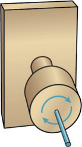
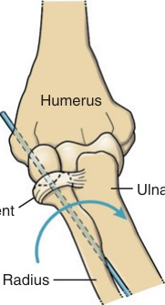
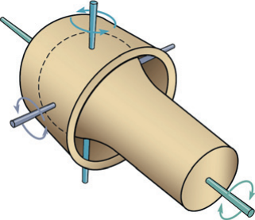
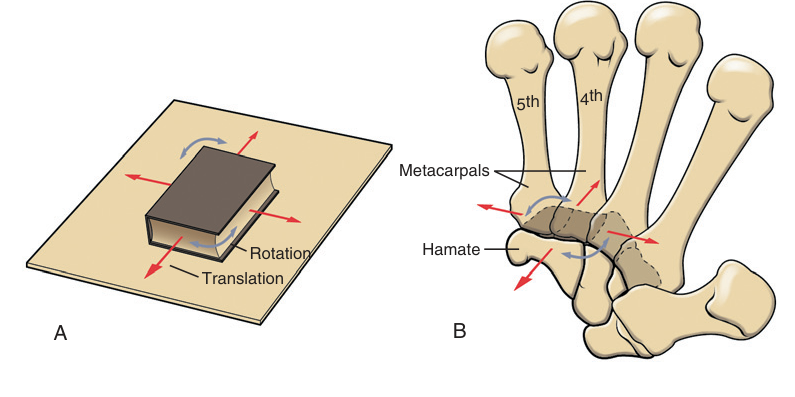
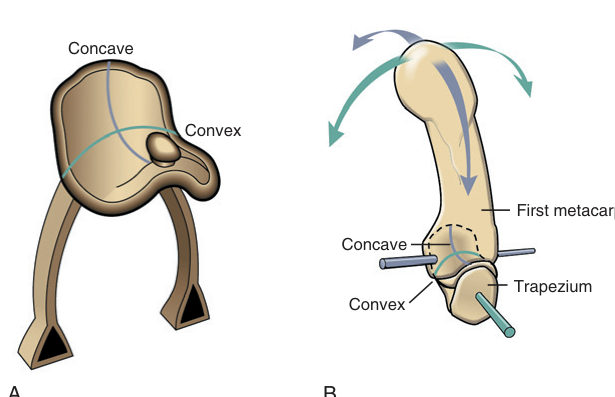
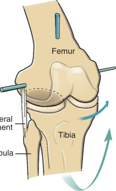
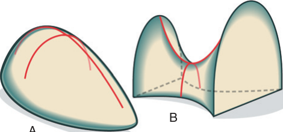
Trong phép loại suy với bản lề cửa (xem Hình 2.3A), trục xoay (tức chốt xuyên qua bản lề) là cố định, vì nó đứng yên khi bản lề mở và đóng. Với trục xoay cố định, mọi điểm trên cánh cửa đều trải qua cùng một độ xoay. Tuy nhiên, ở các khớp giải phẫu, trục xoay rất hiếm khi — nếu có — là cố định trong suốt sự xoay của xương. Vì vậy, xác định vị trí chính xác của trục xoay ở các khớp giải phẫu không phải là việc đơn giản. Một phương pháp ước tính vị trí trục xoay trong các khớp giải phẫu được trình bày ở Hình 2.11A. Giao điểm của hai đường vuông góc chia đôi a đến a′ và b đến b′ xác định trục xoay tức thời (instantaneous axis of rotation) cho cung gập gối 90 độ. Từ "tức thời" có nghĩa là vị trí của trục chỉ đúng cho cung vận động đã chỉ định. Cung góc càng nhỏ dùng để tính trục tức thời thì ước tính càng chính xác. Nếu vẽ một chuỗi các hình minh họa cho một dãy các cung góc nhỏ của vận động, vị trí các trục tức thời có thể được vẽ đồ thị cho từng phần trong cung vận động (xem Hình 2.11B). Đường đi của các vị trí nối tiếp nhau của các trục xoay tức thời được gọi là quỹ đạo các trục xoay (evolute). Đường đi của evolute càng dài và phức tạp hơn khi các bề mặt khớp ăn khớp kém tương hợp hoặc có độ chênh lệch bán kính cong lớn hơn, chẳng hạn như ở gối.
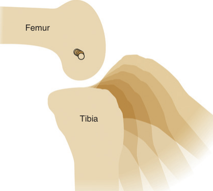
Trong cơ thể chỉ tồn tại bốn loại mô cơ bản: mô liên kết, cơ, thần kinh và biểu mô. Mô liên kết, một dẫn xuất của trung bì, tạo nên cấu trúc nền tảng của khớp. Phần sau đây cung cấp một cái nhìn tổng quan về tổ chức histologic của nhiều loại mô liên kết khác nhau tạo nên bao khớp, dây chằng, gân, sụn khớp và sụn xơ. Xuyên suốt cuốn sách, các mô này được gọi chung là mô liên kết quanh khớp (periarticular connective tissues). Xương là một dạng mô liên kết đặc biệt hóa, có quan hệ mật thiết với khớp, và sẽ được xem xét ngắn gọn ở cuối chương này.
Nói chung, những vật liệu nền tảng cấu thành mọi mô liên kết trong cơ thể là protein sợi, chất nền (ground substance) và tế bào. Ngay cả những cấu trúc dường như khác biệt hoàn toàn như bao lách, đệm mỡ, xương và sụn khớp cũng đều được tạo nên từ những vật liệu nền tảng này. Tuy nhiên, mỗi cấu trúc lại có một tổ hợp, tỷ lệ và cách sắp xếp riêng biệt giữa protein sợi, chất nền và tế bào. Sự phối hợp cụ thể của các vật liệu này phản ánh các chức năng cơ học hay sinh lý đặc thù của từng cấu trúc.
Collagen và elastin — những protein sợi — hiện diện với tỷ lệ khác nhau trong mọi mô liên kết quanh khớp. Collagen là protein phổ biến nhất trong cơ thể, chiếm 30% tổng lượng protein. Ở mức cơ bản nhất, collagen gồm các axit amin xoắn lại theo cấu trúc xoắn ba (triple helix). Những sợi phân tử xoắn này, gọi là tropocollagen, được sắp xếp thành một sợi, và một số sợi được liên kết chéo (cross-link) thành những bó sợi dạng dây thừng. Một sợi collagen có đường kính từ 20 đến 200 nm. Nhiều sợi đan kết với nhau tạo thành bó hoặc sợi lớn. Dù có đến 28 loại collagen riêng biệt được mô tả chủ yếu dựa trên trình tự axit amin, chỉ có 2 loại chiếm phần lớn collagen tìm thấy trong mô liên kết quanh khớp: type I và type II.
Collagen type I gồm những sợi dày, giãn rất ít (tức kéo giãn) khi chịu lực căng. Do tương đối cứng và khỏe, collagen type I rất lý tưởng để gắn kết và hỗ trợ sự khớp nối giữa các xương. Vì vậy, collagen type I là protein chủ yếu trong dây chằng và bao khớp sợi. Loại collagen này cũng tạo nên những bó sợi song song cấu thành gân — những cấu trúc truyền lực giữa cơ và xương. Collagen type II thường mảnh hơn sợi type I và có sức bền kéo thấp hơn đôi chút. Những sợi này tạo nên một khung giữ cho hình dạng và độ đặc (consistency) chung của các cấu trúc phức tạp, chẳng hạn sụn trong suốt (hyaline cartilage). Collagen type II vẫn cung cấp sức bền nội tại cho mô chứa nó.
HAI LOẠI COLLAGEN CHỦ YẾU TRONG MÔ LIÊN KẾT QUANH KHỚP
Collagen type I: sợi dày, dai, giãn rất ít khi bị kéo giãn; cấu thành dây chằng, gân, mạc (fascia) và bao khớp sợi.
Collagen type II: mảnh hơn sợi type I; tạo khung giữ hình dạng và độ đặc của các cấu trúc như sụn trong suốt.
Ngoài collagen, mô liên kết quanh khớp còn chứa lượng elastin khác nhau (Hình 2.13). Những sợi protein này gồm một mạng lưới đan xen của các sợi nhỏ, kháng lại lực căng (kéo giãn) nhưng "nhún" (give) nhiều hơn khi bị kéo dài. Các mô có tỷ lệ elastin cao sẽ trở về hình dạng ban đầu sau khi bị biến dạng lớn. Đặc tính này hữu ích ở những cấu trúc như sụn trong suốt hay sụn đàn hồi và một số dây chằng cột sống (chẳng hạn dây chằng vàng — ligamentum flavum), giúp đưa các đốt sống trở về vị trí ban đầu sau khi cúi về phía trước.
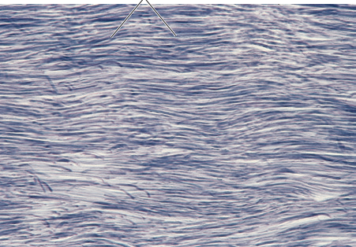
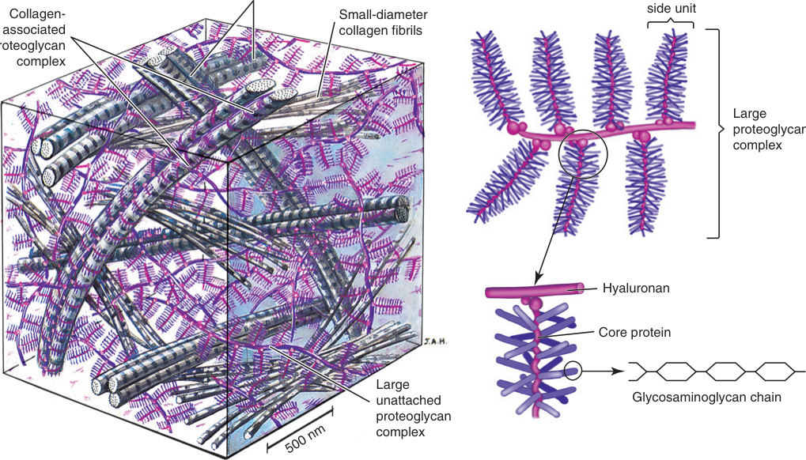
Tế bào chủ yếu trong dây chằng, gân và các mô liên kết quanh khớp hỗ trợ khác được gọi là nguyên bào sợi (fibroblasts). Ngược lại, nguyên bào sụn (chondrocytes) là tế bào chủ yếu trong sụn trong suốt khớp và sụn xơ. Cả hai loại tế bào đều chịu trách nhiệm tổng hợp chất nền và protein sợi chuyên biệt của mô, cũng như thực hiện bảo trì và sửa chữa. Các thành phần bị hư hại hoặc lão hóa của mô liên kết quanh khớp không ngừng được loại bỏ, trong khi các thành phần mới được sản xuất và tái cấu trúc. Tế bào của mô liên kết quanh khớp nói chung thưa thớt và nằm rải rác giữa các sợi hoặc chìm sâu trong các vùng có hàm lượng proteoglycan cao. Sự thưa thớt tế bào, cộng với nguồn máu hạn chế, thường dẫn đến sự lành lặn kém hoặc không trọn vẹn của các mô khớp bị tổn thương. Trái với tế bào cơ, nguyên bào sợi và nguyên bào sụn không mang lại các tính chất cơ học đáng kể cho mô.
Tồn tại ba loại mô liên kết quanh khớp với mức độ khác nhau ở mọi khớp: mô liên kết đặc, sụn khớp và sụn xơ (Bảng 2.2).
Mô liên kết đặc bao gồm hầu hết các "mô mềm" không phải cơ bao quanh khớp: lớp sợi (ngoài) của bao khớp, dây chằng và gân. Các mô này có ít tế bào (nguyên bào sợi), tỷ lệ proteoglycan và elastin thấp đến trung bình, và một lượng dồi dào các sợi collagen type I xếp đóng gói chặt. Giống như hầu hết mô liên kết quanh khớp, dây chằng, gân và bao khớp có nguồn máu hạn chế; do đó chúng có chuyển hóa tương đối thấp. Tuy nhiên, khi chịu tải hoặc stress vật lý, chuyển hóa của các mô này có thể tăng lên.
Mô liên kết đặc về kinh điển được mô tả có hai nhóm con — không đều (irregular) và đều (regular) — dựa trên sự định hướng không gian của các sợi collagen. Lớp sợi của bao khớp được xem là mô liên kết đặc không đều vì sự định hướng lộn xộn, thường ngẫu nhiên của các sợi collagen trong chất nền. Loại mô này rất phù hợp để kháng lực căng từ nhiều hướng, như thường đòi hỏi ở bản chất xoắn ốc của bao khớp vai (glenohumeral) hay hông. Dây chằng và gân được xem là mô liên kết đặc đều nhờ sự định hướng có trật tự hơn, gần như song song của các sợi collagen. Các sợi collagen trong hầu hết dây chằng phát huy hiệu quả tối đa khi bị kéo gần như song song với trục dài của dây chằng. Sau khi độ chùng ban đầu bị kéo căng, mô cung cấp ngay lập tức sức căng hãm sự vận động không mong muốn giữa các thành viên xương.
Khi chấn thương, giãn quá mức hoặc bệnh lý gây lỏng lẻo bao khớp hay dây chằng, cơ sẽ đảm nhận vai trò nổi trội hơn trong việc hãm vận động khớp. Nhưng ngay cả khi cơ bao quanh một khớp lỏng lẻo mạnh mẽ, vẫn tiềm ẩn nguy cơ mất sự ổn định khớp. So với dây chằng, cơ chậm hơn trong việc sinh lực do thời gian phản ứng và độ trễ điện — cơ học cần thiết để tạo lực chủ động. Ngoài ra, lực cơ thường có hướng không lý tưởng để hãm các vận động khớp không mong muốn, và do đó không phải lúc nào cũng cung cấp lực ổn định tối ưu.
Gân được thiết kế để truyền những tải trọng căng lớn giữa một cơ hoạt động và xương mà nó bám vào. Các sợi collagen type I trong gân cung cấp sức bền kéo cao một khi được kéo giãn hoàn toàn. Hình 2.15 minh họa ảnh hiển vi một gân (T) khi bám vào xương (B). Lưu ý các sợi collagen sắp xếp gần song song, nhiều sợi hòa lẫn với collagen của màng xương. Một số sợi collagen có thể thấy chạy sâu hơn vào vật liệu xương, thường được gọi là sợi Sharpey (Sharpey's fibers). Dù cấu trúc vững chắc, gân chịu lượng giãn khác nhau khi subjected to một lực căng lớn. Ví dụ, gân Achilles của người giãn đến 8% chiều dài nghỉ sau một cực đại co cơ bắp cánh chân. Tính đàn hồi này cung cấp một cơ chế dự trữ và giải phóng năng lượng trong đi bộ hay nhảy. Tính chất này cũng cho phép gân Achilles một phần tiêu tán lực căng lớn hoặc sinh nhanh, có thể bảo vệ khỏi chấn thương.
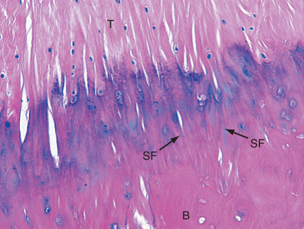
Các nguyên bào sụn mang nhiều hình dạng nằm trong chất nền của các lớp hay vùng khác nhau của sụn khớp (Hình 2.16A). Các tế bào này được tắm và nuôi dưỡng bởi các dưỡng chất trong dịch hoạt dịch. Việc nuôi dưỡng được hỗ trợ bởi hành động "vắt sữa" (milking) của sự biến dạng bề mặt khớp trong quá trình tải khớp ngắt quãng. Các nguyên bào sụn được bao quanh bởi chủ yếu là sợi collagen type II. Các sợi này được sắp xếp tạo nên một mạng lưới đai giữ hay "giàn giáo" bổ sung sự ổn định cấu trúc cho mô (xem Hình 2.16B). Những sợi sâu nhất ở vùng calcified (vôi hóa) được neo chặt vào xương dưới sụn (subchondral bone). Các sợi này liên kết với các sợi định hướng dọc ở vùng sâu kề bên, rồi đến các sợi định hướng chéo ở vùng giữa, và cuối cùng là các sợi định hướng ngang ở vùng bề mặt tiếp tuyến (superficial tangential zone). Chuỗi các sợi liên kết hóa học tạo thành một cấu trúc sợi dạng lưới giam giữ các phức hệ proteoglycan lớn bên dưới bề mặt khớp. Lượng lớn proteoglycan, lần lượt, hút nước, cung cấp một yếu tố cứng đặc thù cho sụn khớp. Độ cứng này tăng khả năng của sụn chống chịu tải trọng.
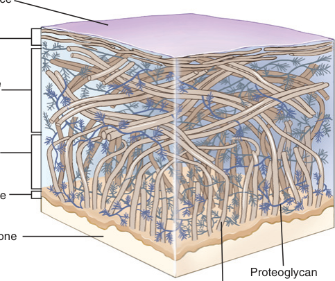
Việc thiếu màng sụn trên sụn khớp có hậu quả tiêu cực là loại bỏ một nguồn sẵn sàng các nguyên bào sợi nguyên thủy dùng cho sửa chữa. Dù sụn khớp có khả năng bảo trì và bồi đắp ma trận bình thường, tổn thương lớn cho sụn khớp trưởng thành thường được sửa chữa kém hoặc không hề. Kết quả là xương dưới sụn mất đi nguồn bảo vệ cơ học chính và chịu những stress cao, có hại. Sự kết hợp giữa sụn khớp thoái hóa hoặc trần (denuded) và xương dưới sụn bị stress là những yếu tố then chốt của tình trạng tàn tật thường gọi là viêm xương khớp (osteoarthritis) — sẽ mô tả sau trong chương. Khi nặng, đau và mất kiểm soát, các thành phần khớp của khớp viêm hoặc hư hại khác có thể được thay thế qua phẫu thuật tạo hình khớp (arthroplasty — từ gốc Hy Lạp arthro: khớp; plasty: tạo hình hay đúc). Thay khớp toàn phần thay thế cả thành viên lõm và lồi của khớp. Một trong những khớp thường nhận tạo hình toàn phần nhất là hông. Vật liệu thay đổi nhưng thường gồm một sự kết hợp của gốm, hợp kim dựa trên kim loại và polyethylene (nhựa).
Như tên gọi, sụn xơ là hỗn hợp của mô liên kết đặc và sụn khớp (Hình 2.17). Nhờ vậy, sụn xơ vừa có tính đàn hồi và hấp thụ xung của sụn khớp, vừa có sức bền kéo của dây chằng và gân. Những bó collagen type I đặc xen với lượng trung bình proteoglycan. Tùy mô, sụn xơ có số lượng nguyên bào sụn và nguyên bào sợi khác nhau, nằm trong một mạng collagen đặc và thường đa hướng. Sụn xơ tạo nên phần lớn vật chất của đĩa đệm đốt sống, viền sụn (labra) ở hông và vai, và các đĩa nằm trong khớp mu, khớp thái dương-hàm, và một số khớp chi (chẳng hạn sụn chêm gối). Các cấu trúc này giúp nâng đỡ và ổn định khớp, dẫn hướng động học khớp (arthrokinematics) phức tạp, và giúp tiêu tán lực. Sụn xơ cũng thấy ở một số dây chằng và gân, đặc biệt tại điểm bám vào xương. Các sợi collagen đan dày đặc của sụn xơ cho phép mô kháng lại lực kéo, cắt và nén đa hướng. Sụn xơ, do vậy, là mô lý tưởng để tiêu tán tải trọng.
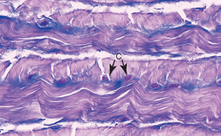
| Loại | Đặc điểm histologic | Chức năng chính | Liên quan lâm sàng |
|---|---|---|---|
| Mô liên kết đặc Dây chằng Lớp sợi của bao khớp Gân | Tỷ lệ cao collagen type I xếp song song đến hơi gợn sóng; hàm lượng elastin thấp Nguyên bào sợi thưa thớt Hàm lượng proteoglycan thấp đến trung bình | Kháng lực căng Dây chằng và bao khớp bảo vệ và gắn kết khớp Gân truyền lực giữa cơ và xương | Bong giãn (sprain) tái diễn dây chằng mác bên cổ chân có thể dẫn đến mất ổn định khớp mạn tính và nguy cơ viêm xương khớp sau chấn thương |
| Sụn khớp (sụn trong suốt chuyên biệt) | Tỷ lệ cao collagen type II Nguyên bào sụn thưa đến trung bình Hàm lượng proteoglycan tương đối cao | Phân tán và hấp thụ lực khớp (nén và cắt) Giảm ma sát khớp | Giai đoạn sớm viêm xương khớp, proteoglycan mất khỏi chất nền, làm giảm khả năng hút nước của mô; sụn mất tính giảm tải, để lộ xương dưới sụn chịu stress có hại |
| Sụn xơ Sụn chêm (gối) Viền sụn (hông) Đĩa (liên đốt sống, thái dương-hàm) | Tỷ lệ cao collagen type I đa hướng Nguyên bào sợi và nguyên bào sụn thưa đến trung bình Hàm lượng proteoglycan trung bình (tùy cấu trúc) | Nâng đỡ và ổn định cơ học khớp Tiêu tán tải trọng qua nhiều mặt phẳng Dẫn hướng arthrokinematics phức tạp | Đĩa thoái hóa hoặc rách ở khớp thái dương-hàm có thể tăng stress lên xương kề bên, dẫn đến thoái hóa, tiếng động khớp bất thường, giảm vận động hàm và đau |
Bản thể cảm giác khớp (joint proprioception) là khả năng cảm nhận vị trí tĩnh hoặc động của một khớp hay chi. Sự nhận thức cảm giác này, thiết yếu cho vận động bình thường, phụ thuộc vào các sợi thần kinh cảm giác nằm trong da, cơ và mô liên kết quanh khớp. Các cảm biến, hay "thụ thể" chi phối (afferent) khớp gắn với một bộ sợi thần kinh nhất định, thường được gọi là cơ quan thụ cảm cơ học (mechanoreceptors) dựa trên khả năng đáp ứng với kích thích cơ học như giãn hay chạm. Bốn loại cơ quan thụ cảm cơ học chính đã được mô tả trong bối cảnh chi phối thần kinh khớp (Bảng 2.3). Một số cơ quan thụ cảm cơ học khác cũng được mô tả, như đĩa Merkel và tiểu cầu Meissner. Đĩa Merkel nằm trong da và nang lông, đáp ứng với áp lực đồng thời truyền thông tin về kết cấu và hình dạng vật thể. Tiểu cầu Meissner nằm trong da và phát hiện sự di chuyển trên da (thường gọi là xúc giác nhẹ). Đĩa Merkel và tiểu cầu Meissner có thể cung cấp thông tin gián tiếp về vị trí khớp khi da hoặc lông quanh khớp di chuyển; tuy nhiên chúng thường không được gộp vào các cơ quan bản thể cảm giác khớp chính. Bằng chứng mâu thuẫn tồn tại về cách phân loại cơ quan thụ cảm cơ học nói chung, cũng như cách mỗi loại góp phần vào bản thể cảm giác khớp. Những tiến bộ trong kỹ thuật nhuộm mô, cụ thể là phân tích miễn dịch hóa mô, đã cho phép xác định cụ thể hơn mô thần kinh trong cơ thể người — điều trước đây khó khăn do các kỹ thuật thiếu khả năng nhuộm chọn lọc mạch, lưới và sợi thần kinh. Điều này giúp đánh giá cao hơn sự phân bố và tầm quan trọng tương đối của cơ quan thụ cảm cơ học trong khớp. Ví dụ, dây chằng có ít cơ quan thụ cảm có khả năng giữ vai trò lớn hơn trong ổn định khớp, trong khi những dây chằng có số lượng cơ quan thụ cảm lớn hơn có thể đóng góp nhiều hơn vào bản thể cảm giác. Dù cần thêm nghiên cứu, việc chi phối thần kinh khớp và vai trò của nó trong bản thể cảm giác có thể trở thành một cân nhắc có giá trị trong phòng ngừa và điều trị chấn thương hay mất ổn định dây chằng.
| Loại thụ thể* | Tên | Vị trí | Đặc điểm | Chức năng |
|---|---|---|---|---|
| Type I / Ruffini | Bao khớp sợi, đặc biệt các lớp nông | Thích nghi chậm, ngưỡng thấp | Cung cấp phản hồi về vị trí khớp tĩnh và gia tốc khớp; nhạy với lực căng | |
| Type II / Pacini | Bao khớp sợi, đặc biệt các lớp sâu hơn, và đệm mỡ khớp | Thích nghi nhanh, ngưỡng thấp | Cung cấp phản hồi về gia tốc khớp; nhạy với lực nén | |
| Type III / giống Golgi | Dây chằng | Thích nghi chậm, ngưỡng cao | Hoạt động ở các cực độ vận động khớp; cung cấp phản hồi về biến dạng mô | |
| Type IV / tận cùng thần kinh tự do | Dây chằng bao khớp, đệm mỡ, mô liên kết nội cơ | Ngưỡng cao | Báo hiệu sự hiện diện của các kích thích có hại, hóa học, cơ học và viêm |
*Lưu ý: loại thụ thể, khi mới được thiết lập, chủ yếu dựa trên cái khi đó gọi là "sơ đồ cấu trúc—hoạt động". Hệ đặt tên này khác với sơ đồ phân loại thường dùng cho các thụ thể thần kinh cảm giác khác, như ở cơ (Chương 3), vốn chỉ dựa trên đường kính sợi thần kinh.
HỘP CHUYÊN ĐỀ 2.1 — Cái nhìn tổng quan về sự chi phối thần kinh cảm giác của khớp
Các thụ thể cơ học tại khớp cung cấp thông tin về vị trí và vận động, nhưng hình ảnh đầy đủ về bản thể cảm giác khớp đòi hỏi sự hợp tác của da, cơ và mô liên kết quanh khớp. Bốn loại (Ruffini, Pacini, giống Golgi, tận cùng tự do) khác nhau về vị trí, tốc độ thích nghi và ngưỡng kích thích — từ phản hồi vị trí tĩnh và gia tốc (Ruffini, Pacini) đến bảo vệ trước các cực độ vận động và kích thích có hại (Golgi, tận cùng tự do). Số lượng cơ quan thụ cảm trong một dây chằng gợi ý vai trò của nó: nhiều thụ thể hơn gắn với bản thể cảm giác, ít hơn gắn với ổn định cơ học thuần túy.
Xương là một mô liên kết đặc biệt hóa, chia sẻ một số đặc điểm histologic nền tảng với các mô liên kết quanh khớp khác. Mô xương gồm một collagen type I bắt chéo (cross-linked) cao độ, các tế bào (như nguyên bào xương — osteoblasts) và một chất nền cứng giàu muối khoáng. Các proteoglycan trong chất nền chứa glycoprotein (như osteocalcin) liên kết mạnh với các muối khoáng giàu canxi và phospho — calcium hydroxyapatite (Ca₁₀[PO₄]₆[OH]₂).
Xương cung cấp sự nâng đỡ cứng cho cơ thể và cung cấp cho cơ một hệ đòn bẩy. Vỏ ngoài (cortex) của xương dài ở bộ xương người trưởng thành có thân (shaft) cấu thành bằng xương đặc (compact bone) dày (Hình 2.18). Đầu xương dài, ngược lại, được tạo bởi một lớp xương đặc mỏng hơn bao quanh một mạng xương xốp (cancellous bone). Xương của bộ xương trục người trưởng thành, như thân đốt sống, có một vỏ xương đặc tương đối dày bao bọc một lõi nâng đỡ xương xốp. Như đã mô tả, sụn khớp phủ các bề mặt khớp diarthrodial của mọi xương suốt hệ cơ-xương.
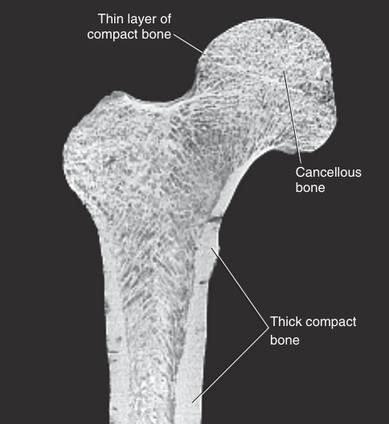
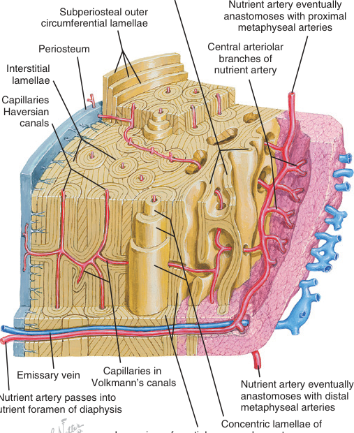
Xương thể hiện sức mạnh lớn nhất khi bị nén dọc theo trục dài của thân, tải các hệ Haversian theo chiều dọc — tương tự như nén một ống hút dọc theo trục của nó. Đầu xương dài nhận các lực nén đa hướng qua các bề mặt chịu tải của sụn khớp. Các stress được truyền sang xương dưới sụn kề bên rồi vào mạng xương xốp, которое lần lượt hoạt động như một chuỗi đòn chống (struts) để đổi hướng lực vào trục dài của xương đặc ở thân. Sự sắp xếp cấu trúc này đổi hướng lực để hấp thụ và truyền tải, tận dụng thiết kế kiến trúc độc đáo của xương. Tóm lại, trái với mô liên kết quanh khớp, xương có nguồn máu phong phú kết hợp với chuyển hóa rất động. Điều này cho phép xương không ngừng tái cấu trúc để đáp ứng stress vật lý. Nguồn máu phong phú cũng mang lại cho xương tiềm năng lành lặn tốt sau gãy.
HỘP CHUYÊN ĐỀ 2.2 — Định luật Wolff (Wolff's Law)
Xương là mô rất động, không ngừng thay đổi hình dạng, sức mạnh và mật độ để đáp ứng với các lực ngoại tác. Khái niệm chung này thường được gọi là định luật Wolff, đặt theo công trình và giảng dạy của Julius Wolff (1839–1902), một nhà giải phẫu học và bác sĩ phẫu thuật chỉnh hình người Đức. Tạm dịch, định luật Wolff phát biểu rằng "xương được lắng đọng ở những vùng chịu stress cao và được tái hấp thu ở những vùng chịu stress thấp." Tiên đề đơn giản này có nhiều ứng dụng lâm sàng. Chẳng hạn, một đĩa đệm đốt sống thoái hóa và mất nước có thể không bảo vệ được xương bên dưới khỏi stress. Theo định luật Wolff, xương đáp ứng với stress bằng cách tổng hợp thêm xương. Các "gai" xương (osteophytes) hay chồi xương có thể hình thành nếu phản ứng quá mức. Đôi khi chồi xương chặn vận động hoặc chèn ép một rễ thần kinh cột sống kề bên, gây đau chi tương ứng hoặc yếu cơ liên quan.
Định luật Wolff cũng giải thích được sự mất xương và giảm sức mạnh của nó sau khi bỏ tải (unloading) mạn tính. Ví dụ, mật độ khoáng xương ở người tổn thương tủy sống suy giảm nhanh, có lẽ do xương bị bỏ tải bởi tình trạng liệt. Mật độ xương giảm đặt xương người tổn thương tủy sống vào nguy cơ gãy cao hơn. Gãy xương không phải hiếm, xảy ra từ chấn thương như ngã khỏi xe lăn, trong sinh hoạt hàng ngày như tự tập vận động thụ động (range-of-motion) chi dưới, hoặc khi chuyển vị có kiểm soát giữa bồn tắm và ghế. Các nhà nghiên cứu đã chỉ ra rằng mất xương sau tổn thương tủy sống có thể giảm bằng cách dùng kích thích điện thích hợp lên cơ chi bị liệt. Lực do cơ được kích thích sinh ra truyền qua xương. Dù không phải lúc nào cũng thực tế, về lý thuyết việc áp dụng đều đặn và thích hợp kích thích điện lên cơ liệt có thể giúp ngăn ngừa gãy xương ở người liệt mạn tính sau tổn thương tủy sống. Cần thêm nghiên cứu để xác định tính khả thi và lợi ích dài hạn của kích thích điện như một phần thường quy của phục hồi chức năng cho người tổn thương tủy sống.
Lượng và cách sắp xếp của protein sợi, chất nền và nước cấu thành mô liên kết quanh khớp chịu ảnh hưởng bởi hoạt động thể chất. Ở mức độ hoạt động bình thường, thành phần của các mô thường đủ khỏe để kháng lại dải lực tự nhiên tác động lên hệ cơ-xương. Một khớp bị bất động (immobilized) kéo dài cho thấy những thay đổi rõ rệt trong cấu trúc và chức năng của các mô liên kết liên quan. Sức mạnh cơ học của mô suy giảm tương ứng với sự giảm lực của tình trạng bất động. Đây là một phản ứng bình thường trước một điều kiện bất thường. Đặt một phần cơ thể trong bó bột và giam một người trên giường là những ví dụ mà bất động làm giảm mạnh mức lực tác động lên hệ cơ-xương. Dù vì những lý do khác nhau, liệt cơ hoặc yếu cơ cũng làm giảm lực lên hệ cơ-xương.
Tốc độ suy giảm sức mạnh của mô liên kết quanh khớp phụ thuộc phần nào vào hoạt động chuyển hóa bình thường của mô cụ thể. Bất động mạn tính gây giảm rõ rệt sức bền kéo của dây chằng gối trong vài tuần. Các dấu ấn sinh hóa sớm nhất của sự tái cấu trúc này có thể phát hiện trong vòng vài ngày sau bất động. Ngay cả sau khi ngừng bất động và hoàn tất một chương trình vận động phục hồi kéo dài, các dây chằng vẫn tiếp tục có sức bền kéo thấp hơn những dây chằng chưa từng bị bất động. Các mô khác như xương và sụn khớp cũng cho thấy mất khối lượng, thể tích và sức mạnh sau bất động. Kết quả từ các nghiên cứu thực nghiệm ám chỉ rằng các mô mất sức mạnh nhanh chóng để đáp ứng với việc giảm tải. Sự phục hồi hoàn toàn sức mạnh sau khi tái tải lại chậm hơn nhiều và thường không trọn vẹn.
Bất động một khớp kéo dài thường là cần thiết để hạn chế đau và thúc đẩy lành thương sau chấn thương, như xương gãy. Cần có sự phán đoán lâm sàng để cân bằng các tác động tiêu cực tiềm tàng của bất động với nhu cầu thúc đẩy lành thương. Duy trì sức mạnh mô tối đa quanh khớp đòi hỏi sử dụng bất động một cách thận trọng, trở lại tải sớm, và can thiệp phục hồi sớm.
Chấn thương mô liên kết quanh khớp có thể xảy ra từ một sự kiện áp đảo đơn lẻ (chấn thương cấp tính) hoặc để đáp ứng với sự tích lũy các tổn thương nhỏ hơn trong thời gian dài (chấn thương mạn tính). Chấn thương cấp tính thường sinh ra bệnh lý có thể phát hiện. Một dây chằng hoặc bao khớp bị rách hoặc giãn quá mức gây một phản ứng viêm cấp tính, liên quan đến một chuỗi các trung gian viêm có thể đoán trước. Toàn bộ quá trình này phụ thuộc nhiều vào giao tiếp liên bào thích hợp, điều được thực hiện qua một mạng các phân tử tín hiệu tế bào gọi là cytokine.
Cytokine có những ý nghĩa quan trọng cả trong đau khớp và vận động. Ngoài vai trò thúc đẩy và duy trì viêm, các phân tử tín hiệu tế bào này góp phần vào các quá trình đau viêm qua tác động lên các sợi đau. Điều này quan trọng, vì nó quy kết các cytokine tiền viêm (pro-inflammatory) vào việc sinh ra và duy trì đau khớp trong các tình trạng như viêm khớp — một quan sát có thể truyền cảm hứng cho các can thiệp y khoa và dược lý điều trị tình trạng này. Thú vị thay, ngoài vai trò trong viêm và đau, nồng độ cytokine được thấy là dao động như một hàm của vận động. Một số tài liệu mô tả chúng như các cytokine kháng viêm, gợi ý vai trò hạn chế mức độ viêm trong lúc tập. Hơn nữa, nghiên cứu hiện nay gợi ý rằng các thành phần của đơn thuốc vận động — cường độ, thời lượng và phương thức — có lẽ có ảnh hưởng lớn hơn trong việc định hướng nồng độ cytokine so với chính tổn thương cơ do vận động gây ra (và chuỗi viêm theo sau). Hiểu rõ hơn về các cytokine kháng viêm này có thể hữu ích trong tối ưu hóa đơn thuốc vận động, đặc biệt ở các giai đoạn hậu phẫu của phục hồi chức năng.
Một khớp có thể trở nên mất ổn định về cấu trúc khi các mô liên kết quanh khớp bị hư hại không còn khả năng hãm các cực độ vận động tự nhiên. Các khớp thường bị ảnh hưởng bởi mất ổn định chấn thương cấp tính thường gắn với các cánh tay đòn (moment arm) ngoại tác dài nhất của bộ xương, và do đó chịu các mô-men xoắn ngoại lớn. Vì lý do này, các khớp tibiofemoral, talocrural và glenohumeral thường phải chịu tổn thương dây chằng cấp tính dẫn đến mất ổn định.
Chấn thương cấp tính cũng có thể gây gãy xương trong khớp (intra-articular fractures) liên quan đến sụn khớp và xương dưới sụn. Việc nắn chỉnh (reduction) cẩn thận các mảnh gãy giúp phục hồi sự tương hợp (congruity) của khớp, từ đó tạo điều kiện cho chức năng trượt, ma sát thấp, mượt mà của các bề mặt khớp. Điều này rất quan trọng để phục hồi chức năng tối đa. Dù xương kề khớp có khả năng sửa chữa xuất sắc, việc sửa chữa sụn khớp gãy thường không trọn vẹn và sinh ra các vùng bề mặt khớp cơ học kém, dễ thoái hóa. Để tối đa hóa sự phục hồi khớp sau chấn thương, nhiều kỹ thuật y khoa đã được áp dụng, bao gồm vi phẫu (microfracture), ghép mảnh sụn-xương (osteochondral grafting, mosaicplasty) và tạo hình bào mòn (abrasion chondroplasty). Hai thập kỷ qua chứng kiến sự ra đời của các kỹ thuật phục hồi sụn mới hơn, được cho là hiệu quả hơn: cấy ghép nguyên bào sụn tự thân (autologous chondrocyte implantation), cấy ghép tế bào gốc trung mô (mesenchymal stem cell implantation) và cấy ghép nguyên bào sụn tự thân có hỗ trợ ma trận (matrix-assisted autologous chondrocyte transplantation). Nỗ lực đang tiếp diễn để thiết lập các can thiệp tối ưu cho phục hồi sụn, bởi sức mạnh sụn khớp không đầy đủ, cộng với sự tăng stress cục bộ do căn chỉnh bề mặt kém, có thể dẫn đến các tình trạng mạn tính như viêm xương khớp sau chấn thương.
Sự sửa chữa các cấu trúc khớp sụn xơ bị hư hại phụ thuộc vào sự gần gũi và đầy đủ của nguồn máu. Một vết rách vùng ngoài nhất của sụn chêm gối kề các mạch máu nằm trong bao khớp có thể lành hoàn toàn. Ngược lại, các vết rách chu vi trong nhất của sụn chêm thường không lành. Điều này cũng đúng với các lamellae trong của đĩa đệm đốt sống trưởng thành, vốn không có khả năng lành sau tổn thương lớn.
Chấn thương mạn tính thường được xếp loại là một dạng "hội chứng quá tải" (overuse syndrome) và phản ánh sự tích lũy của các tổn thương nhỏ chưa được sửa chữa. Bao khớp và dây chằng bị hư hại mạn tính dần mất chức năng hãm, dù sự mất ổn định của khớp có thể bị che khuất bởi sự thay thế bằng sự hãm của cơ. Trong trường hợp này, lực khớp có thể tăng lên do cơ "bảo vệ" (guarding) khớp một cách phóng đại. Chỉ khi khớp bị thách thức đột ngột hoặc ép buộc bởi một vận động cực đoan thì sự mất ổn định mới bộc lộ.
Sự mất ổn định tái diễn có thể gây ra các điều kiện tải bất thường lên các mô khớp, dẫn đến sự cố cơ học. Bề mặt sụn khớp và sụn xơ có thể bị phân mảnh, kèm theo mất proteoglycan và sự suy giảm kháng lực nén và cắt. Giai đoạn thoái hóa sớm thường cho thấy một bề mặt sụn khớp sần sùi hoặc "xơ hóa sợi" (fibrillated). Một vùng xơ hóa sợi của sụn khớp có thể sau đó phát triển các vết nứt (clefts) lan từ bề mặt vào lớp giữa hoặc sâu nhất của mô. Những thay đổi này làm giảm chất lượng hấp thụ xung của mô.
HỘP CHUYÊN ĐỀ 2.3 — Viêm xương sụn tách rời (Osteochondritis Dissecans): một ví dụ về chấn thương trong khớp
Viêm xương sụn tách rời là một ví dụ về chấn thương trong khớp (intra-articular injury) liên quan đến gãy qua sụn khớp và xương dưới sụn (Hình 2.20). Nó không phải là một bệnh mà là một tình trạng mà sụn khớp và xương dưới sụn tách rời khỏi bề mặt khớp. Nguồn gốc khiến một số cá nhân dễ mắc tình trạng này không được hiểu rõ, nhưng người ta cho rằng nó là kết quả của chấn thương lặp đi lặp lại hoặc xảy ra như phản ứng thứ phát sau một chấn thương khớp, đặc biệt trong bối cảnh lưu thông máu không đủ trong quá trình lành thương. Nó xảy ra thường nhất ở nam thiếu niên và — như với nhiều chấn thương khớp sớm trong đời — có tương quan với sự phát triển sau này của viêm xương khớp sau chấn thương, dù do môi trường sinh cơ học bất lợi hay do lành thương khớp suy giảm. Việc sớm nhận biết viêm xương sụn tách rời là rất quan trọng để tối ưu hóa lành thương và hy vọng tránh được viêm xương khớp sau chấn thương. Các lựa chọn điều trị gồm chăm sóc bảo tồn (bao gồm bất động và sửa đổi hoạt động) và can thiệp phẫu thuật tùy theo độ trưởng thành xương và tính ổn định của tổn thương ở cá nhân đó.
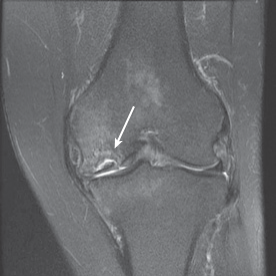
Tần suất OA tăng theo tuổi, và bệnh có nhiều biểu hiện. OA vô căn (idiopathic OA) xảy ra trong absence of một nguyên nhân cụ thể; nó chỉ ảnh hưởng một hoặc một vài khớp, đặc biệt những khớp chịu tải trọng lớn nhất: hông, gối và cột sống thắt lưng. OA gia đình hay OA toàn thể (generalized OA) ảnh hưởng các khớp ở bàn tay và thường gặp ở nữ hơn. OA sau chấn thương có thể ảnh hưởng bất kỳ khớp hoạt dịch nào đã tiếp xúc với chấn thương đủ mức độ.
Viêm khớp dạng thấp khác biệt rõ rệt với OA, bởi nó là một rối loạn mô liên kết tự miễn, hệ thống, với thành phần viêm mạnh. Chẩn đoán chính xác rối loạn này phụ thuộc vào sự tham gia khớp, kết quả huyết thanh học và thời gian triệu chứng, với sự tham gia của nhiều khớp là đặc điểm nổi bật của RA. Rối loạn chức năng khớp thể hiện qua viêm đáng kể của bao khớp, màng hoạt dịch và dịch hoạt dịch. Sụn khớp bị phơi nhiễm một quá trình enzyme có thể nhanh chóng bào mòn bề mặt khớp. Bao khớp bị giãn rộng bởi sự sưng và viêm tái diễn, thường gây mất ổn định khớp và đau rõ rệt. Thú vị thay, nồng độ yếu tố hoạt hóa tế bào B (B-cell activating factor) — một trung gian cytokine — được thấy tăng cao trong RA và các bệnh tự miễn khác, ảnh hưởng đến đáp ứng miễn dịch và dao động cùng mức độ hoạt động bệnh. Điều này gợi ý các ứng dụng tiềm năng của các chất đối kháng yếu tố hoạt hóa tế bào B trong quản lý dược lý RA; tuy nhiên cần thêm nghiên cứu và phát triển.
Bước vào tuổi già đi kèm với những thay đổi histologic ở mô liên kết quanh khớp và xương, từ đó có thể sinh ra những thay đổi cơ học trong chức năng khớp. Thường không thể tách biệt các tác động của tuổi tác ở người khỏi các tác động của giảm hoạt động thể chất hoặc bất động. Hơn nữa, ở mức nền tảng, các tác động sinh lý của cả ba biến số này cực kỳ tương đồng.
Tốc độ và quá trình mà mô già đi rất cá biệt và có thể được thay đổi, theo hướng tích cực hoặc tiêu cực, bởi các loại và tần suất hoạt động và bởi một loạt các yếu tố y khoa, nội tiết, di truyền và dinh dưỡng. Trên phạm vi rộng, lão hóa đi kèm với sự chậm lại của tốc độ thay thế và sửa chữa protein sợi cũng như proteoglycan trong mọi mô liên kết quanh khớp và xương. Do đó, các mô mất khả năng hãm và phân tán tối ưu các lực sinh ra tại khớp. Tác động của vi chấn thương qua nhiều năm có thể tích lũy thành tổn thương dưới lâm sàng có thể tiến triển thành sự cố cấu trúc hoặc một thay đổi đo lường được về tính chất cơ học. Một ví dụ lâm sàng của hiện tượng này là sự thoái hóa liên quan tuổi tác của dây chằng và bao khớp gắn với khớp glenohumeral. Sự hỗ trợ cấu trúc giảm sút do các mô này có thể cuối cùng dẫn đến viêm gân hoặc rách chóp xoay.
Các phân tử glycosaminoglycan (GAG) do các tế bào già hóa trong mô liên kết sinh ra ít về số lượng và nhỏ hơn về kích thước so với những tế bào trẻ. Nồng độ GAG (và do đó proteoglycan) giảm này làm giảm khả năng giữ nước của ma trận ngoại bào. Cụ thể hơn, hàm lượng proteoglycan thấp hơn làm giảm khả năng của nhân (nucleus) hút và giữ nước, từ đó hạn chế khả năng mô liên kết hấp thụ và truyền tải tải trọng một cách hiệu quả. Sụn khớp già hóa, chẳng hạn, chứa ít nước hơn và kém able to attenuate và phân tán các lực tác động lên xương dưới sụn. Sụn khớp mất nước, do vậy, có thể là tiền thân của viêm xương khớp.
Các sợi collagen trong dây chằng kém hydrat hóa thiếu khả năng trượt dễ dàng qua nhau. Kết quả là các sợi bên trong dây chằng không tự căn chỉnh với các lực tác động dễ dàng, cản trở khả năng của mô kháng lại tối đa một lực áp dụng nhanh. Khả năng hình thành dính (adhesions) giữa các mặt phẳng mô từng di động được tăng lên, từ đó thúc đẩy hạn chế tầm vận động ở các khớp già. Thú vị thay, gân được thấy là trở nên kém cứng (less stiff) theo tuổi tác và bỏ tải mạn tính. Sự tăng đáng kể tính tuân thủ (compliance) do vậy có thể giảm hiệu suất cơ học và tốc độ truyền lực cơ vào xương. Hậu quả là cơ có thể kém khả năng ổn định tối ưu một khớp.
Xương yếu đi theo tuổi tác, một phần do hoạt động nguyên bào xương giảm và tiềm năng biệt hóa giảm của tế bào gốc tủy xương. Sự thay đổi chuyển hóa mô liên kết liên quan tuổi tác trong xương góp phần làm chậm lành gãy xương. Chuyển hóa thay đổi cũng góp phần gây loãng xương (osteopor 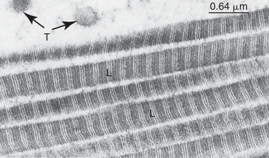
May mắn thay, nhiều tác động sinh lý tiêu cực tiềm tàng của sự lão hóa mô liên kết quanh khớp và xương có thể được giảm thiểu, ở một mức độ nào đó, qua hoạt động thể chất và tập kháng lực. Những đáp ứng này làm nền tảng cho nhiều nguyên lý phục hồi chức năng vật lý dùng trong điều trị người cao tuổi.
Khớp cung cấp nền tảng của vận động cơ-xương và cho phép sự ổn định cũng như phân tán lực giữa các phân đoạn cơ thể. Một số sơ đồ phân loại tồn tại để xếp hạng khớp và cho phép thảo luận về các đặc điểm cơ học và động học của chúng. Các vận động của khớp giải phẫu thường phức tạp do hình dạng bất đối xứng và các bề mặt không tương hợp của chúng. Trục xoay thường được ước tính cho các mục đích đo lường lâm sàng, chẳng hạn đo góc khớp (goniometry).
Chức năng và sự đàn hồi của khớp được quyết định bởi kiến trúc và các loại mô cấu thành khớp. Thú vị thay, tất cả mô liên kết quanh khớp (và xương) chia sẻ một tổ chức histologic về căn bản tương tự. Mỗi mô chứa tế bào, một chất nền hay ma trận, và protein sợi. Mức độ và tỷ lệ của các thành phần này thay đổi đáng kể tùy theo đòi hỏi chức năng chủ đạo đặt lên mô. Bao khớp, dây chằng và gân được thiết kế để kháng lực căng theo nhiều hoặc một hướng. Sụn khớp đặc biệt phù hợp để kháng nén và cắt trong khớp và, trong sự hiện diện của dịch hoạt dịch, cung cấp một giao diện cực kỳ trơn tru cho vận động khớp. Sụn xơ chia sẻ các đặc điểm cấu trúc và chức năng của mô liên kết đặc và sụn khớp. Các sụn chêm sụn xơ ở gối, chẳng hạn, phải kháng các lực nén lớn từ những cơ lớn quanh khớp và chịu đựng stress cắt đa hướng do động học trượt (sliding arthrokinematics) trong khớp tạo ra. Xương là mô liên kết đặc biệt hóa, được thiết kế để nâng đỡ cơ thể và các chi, và cung cấp một chuỗi đòn bẩy cho cơ vận động cơ thể.
Khả năng sửa chữa các mô khớp bị hư hại gắn chặt với sự hiện diện của nguồn máu trực tiếp và sự sẵn có của các tế bào tiền thân (progenitor cells). Sức khỏe chức năng và tuổi thọ của khớp cũng bị ảnh hưởng bởi tuổi tác, tải trọng, bất động, chấn thương và một số bệnh lý.
Đáp án các câu hỏi ôn tập có trên website Evolve.